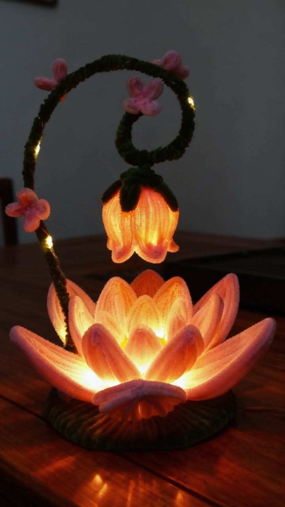
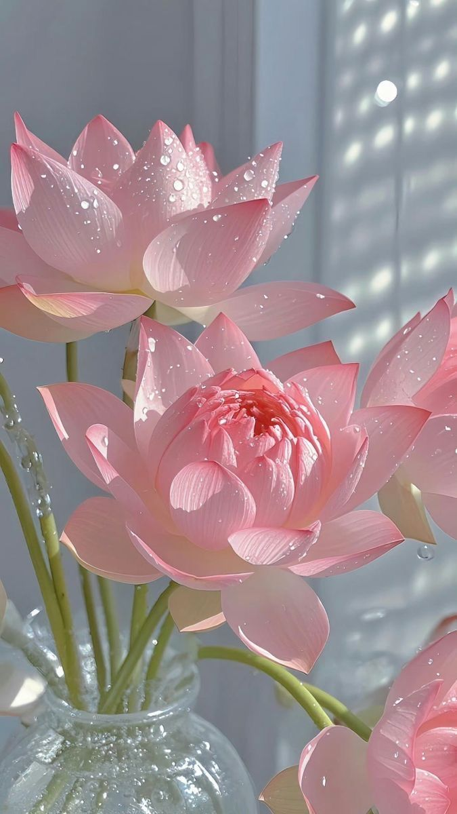
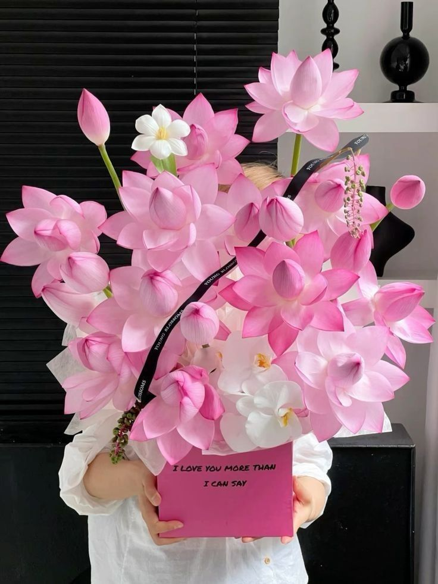

🌸 Nuestra Historia
Sweet Haru nació con el deseo de transmitir emociones a través de las flores. Inspirados en la delicadeza del estilo coreano, elaboramos arreglos florales únicos para celebrar cada momento especial de la vida.
Cada ramo es preparado con flores frescas, dedicación y cariño, buscando convertir un detalle en un recuerdo inolvidable para quienes lo reciben.

🌷 Misión
Crear arreglos florales de alta calidad que transmitan amor, alegría y gratitud, ofreciendo un servicio cercano y personalizado para cada cliente.
🌼 Visión
Ser una florería reconocida por la creatividad, la calidad y la elegancia de nuestros diseños, inspirando emociones en cada entrega.
💖 Nuestros Valores

Amor
Elaboramos cada ramo con dedicación, pasión y cariño, porque creemos que cada detalle transmite emociones únicas.

Calidad
Seleccionamos cuidadosamente flores frescas para ofrecer arreglos elegantes y de la mejor calidad.

Creatividad
Diseñamos arreglos exclusivos inspirados en el estilo floral coreano, cuidando cada combinación de colores.

Servicio
Brindamos una atención cercana y personalizada para que cada cliente encuentre el arreglo perfecto.
🌺 ¿Por qué elegir Sweet Haru?
Flores Frescas
Seleccionamos flores frescas todos los días para garantizar la mejor calidad en cada uno de nuestros arreglos florales.
Entrega Segura
Realizamos entregas con cuidado para que tus flores lleguen en perfectas condiciones y en el momento ideal.
Diseños Exclusivos
Cada arreglo es elaborado con un estilo elegante, delicado y moderno inspirado en las florerías coreanas.
Hecho con Amor
Ponemos dedicación, creatividad y cariño en cada detalle para convertir cada ramo en un recuerdo inolvidable.